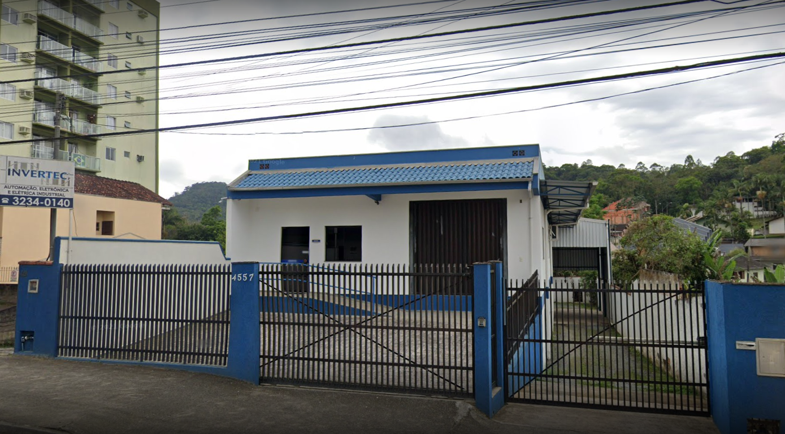

Mais de 20 anos de experiência em automação industrial no Vale do Itajaí
A INVERTEC surgiu em 2001 com o intuito de prestar serviços na área de manutenção eletrônica industrial.
Observando a crescente necessidade de melhoria nos processos industriais das empresas do Vale do Itajaí e a carência de profissionais no mercado de automação eletroeletrônica, buscamos constante especialização no que existe de mais moderno em automação industrial.
Hoje atuamos nos mais diversos segmentos: metalúrgico, têxtil, plásticos, alimentício, hospitalar e em parceria com fabricantes de máquinas, sempre com foco em qualidade, agilidade e confiança.

Integradores Alliance e assistência técnica autorizada Schneider Electric, garantindo suporte oficial e peças originais.
Laboratório moderno equipado para diagnóstico e reparo de CLPs, IHMs, inversores, servoacionamentos e placas dedicadas.
Atendimento em campo e em laboratório para indústrias de todos os portes na região de Blumenau e em todo o estado de Santa Catarina.
Entre em contato e descubra como podemos ajudar a sua indústria.
Fale conosco